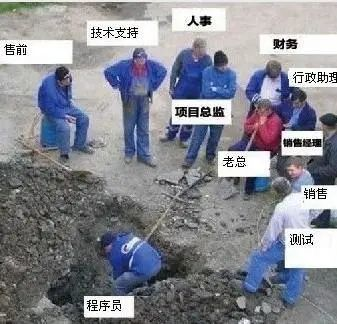
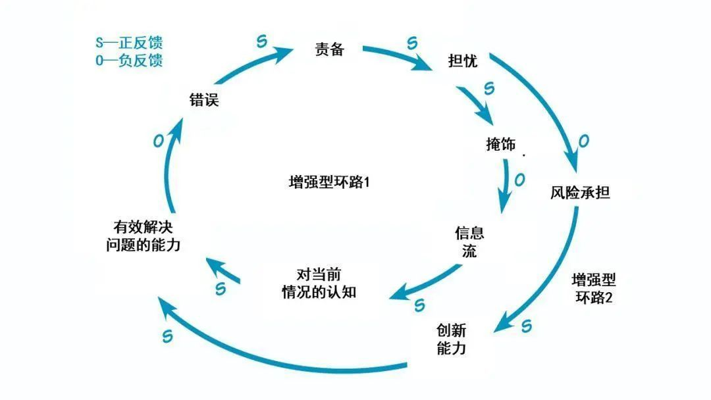

前两天有粉丝在群里让我写一下程序员的精进方法，今天就来简单聊一下这个话题。
在我看来程序员和小兵的职业发展路线是一样的，我简单的把小兵到将军的过程分成三个阶段，来看一下在这三个阶段当中我们需要做些什么。
冲锋陷阵
对于一个小兵来说，最重要的工作就是冲锋陷阵。小兵需要上战场奋勇杀敌，我们程序员也是一样，需要完成各种各样的任务。这些任务的来源可能多种多样，有可能是产品经理提的需求，也有可能是老板安排的任务等等。在这个阶段比较单纯，比拼的就是任务的完成情况。
以前在阿里的时候有一句老话，叫做你要能让你的队友愿意把后背交给你。阿里有很多这样的老话，贴在公司的各个地方，有些老话看起来有些鸡汤，有些细品还挺有道理的。这句话阐述的点和士兵就更像了，在战场上只有靠得住的战友，我们才愿意把后背交给他，否则就完蛋了。那么我们要做的就是一个靠得住的人。

那什么样的人是靠得住的人呢？
其实很简单，就是靠谱。我之前专门写过一篇文章谈过怎么样成为一个靠谱的人，这里我们简单复述其中几点。首先一个靠谱的人应该是一个负责的人，分内的事情绝不推脱，保质保量的完成，对于自己的工作有责任感。如果在别人看来是你分内的事情但是你却没有完成好是非常扣分的，很容易被打上不靠谱的标签。
其次是专业，我们的任务不仅要完成好，而且要完成得很专业。比如老板让你在已有的项目当中开发一个新的功能，你只是完成了功能的开发，充其量只能打60分。因为单纯的完成工作体现不出专业，你在完成之余，还需要结合业务以及场景去思考，能够理解之前的人这么做的用意，还能有一些自己的想法。否则如果老板问起，你的回答是我没想过这个问题，那是要扣很多分的。
最后是积极，我们需要对我们的工作保持热忱，愿意做一些看起来很傻的事情。这一点说起来容易，但是做起来是这三点里面最难的。因为一个人的热情是很容易消磨的，我们刚毕业进入职场的时候往往都是干劲满满充满斗志的，只要短短的两三年就可以消磨大多数人的热情，变成按部就班的咸鱼。比如完成任务之后写成详细的文档给别人参考，比如自告奋勇做技术分享，再比如code review的时候，即使不是自己的代码也认真研读。再比如整天做着零零碎碎打杂的事情，还能坚持每一件都认真做好。
做这些事情的好处不是一朝一日直接体现的，很有可能默默无闻付出了很多，也不被上司或者是其他同事看见。很多人很快就意志消磨了，只是循规蹈矩地完成自己分内的事情。但是想一想，一个按部就班的人，一个丧失了热情的人，想要往上走，想要承担更大的责任，拥有更大的视野显然是非常困难的。
在这个阶段我们更多的是做好自己分内的事情，成为一个合格、靠谱、优秀的工程师。悟性高的同学，一般可以在毕业1~2年实现这一点。
策划行动
《史记》项羽本纪当中，项羽小时候曾经说过这样一句话，剑一人敌不足学，学万人敌。
一个小兵再厉害杀敌也是有限的，即使是金庸小说那些大侠们面临围攻也只有认栽的份。当我们的积累了实力、熬到了资历之后，就该从单打独斗逐渐转变为策划行动了，也就是说从单枪匹配变成团队作战了。
既然是团队作战，那么就不止需要自己个人的能力了，更需要团队协作、统筹规划。在这个阶段的工程师往往会负责一个小项目或者是小模块，带领几个“小弟”一起来干活。我个人认为在这个阶段最需要的能力有两点，第一点是大局观，第二点是责任心。
先来说说大局观，这点很好理解，我们面临的不是一个个人的厮杀了，而是团体作战。我们需要协作完成一个比较复杂的任务，我们要考虑的问题会非常多。从项目本身的角度出发，这个项目的目的是什么，想要达成什么样的效果？它的上下游、业务方以及合作方有哪些？对于我们要完成的任务，有哪些助力（比如现成的组件，其他团队和人的协助），又有哪些阻力（坑）？老板期望达成的效果是什么，大概需要多少人力？当前的人力是否充足如果不足，是否要删减功能或者是降低难度？如果要这么做，怎么和老板沟通？每个人的特点和喜好是什么，他们适合承担哪一块任务？
如果考虑的角度再深一点，视野再大一点，又会有新的问题。比如当前这个项目对之前和之后的系统会产生什么样的影响？这个项目在整个团队或者是公司的角色是什么，在规划当中起到什么样的作用？这个项目的后续会做什么？维护需要投入多少人力？如果效果不好，可能是什么原因，应该怎么弥补？当下可以针对性的做什么预防和准备？
这还是项目执行之前，项目开始之后又会诞生一大堆需要操心的事项。小到当前的进度以及完成质量，大到面临的风险以及临时发现的问题，这些都需要缜密和深入的思考。从一个工程师转向一个管理者，绝不仅仅是从做事情的变成分配任务的这么简单。
再来说说责任心，其实这点和大局观也有一点点像。当我们成为管理者之后，我们负责的人就不仅仅是我们自己了，而是一个团队。我们要尽可能照顾到团队当中的每一个人。拙劣的管理者呢把团队中的人看成是自己的下属，自己不想做的事情就安排给他们，时间一长，全变成打杂的。拿破仑说过，好的领导就是把自己下属的利益放在心上，并且让他们也知道这一点。
在互联网公司利益都是隐形的，比如年底的绩效以及个人成长发展空间等等。虽然不会直接拿上台面来讨论，但每个人心里都有一根秤，跟着你做事能不能学到东西，有没有成长，对个人的绩效以及职业发展有没有帮助，这些问题也许不会明说，但是都肯定会想的。好的管理者，有能力也有意识会照顾到这一点。
组织战役
当职位再进一步，从小领导转变成大领导，要负责的就不只是一城一地的得失，而是整个战役了。对应到互联网公司，大概是公司里的技术总监，负责一大块技术或者是业务。
这个阶段离我还很远，我也不太熟悉，只能结合历史简单聊聊我的想法和感受。当我们评价一个将领的时候，经常会将他们分成将才和帅才。所谓的将才就是前面一种，负责一场战斗，比如攻占一个城池或者是守卫一个阵地这样的硬仗。像是这样的人才多不胜数，单单三国志当中就有很多。而帅才呢，要比将才更高一层，需要肩负一整个战役，比如老朱挥师北伐统一天下，前线打仗的是蓝玉、徐达等将领，但后方指挥的还是老朱。
对应到互联网公司当中，这样的人要做的事不是完成一个项目，而是决定或者是影响公司的发展。为当下解决问题，为未来铺路。我们来举个例子，假如你是双十一的技术负责人，你需要做什么？你需要负责梳理双十一的流量以及链路，负责机器压力测试，负责设计预案和备案，敲定事故响应机制，审核各个环节的流程以及负责人等等。
这么多环节显然不可能都是你一个人完成，你毕竟人力有限，所以你需要找到合适的人去做这件事，不仅如此，你还需要制定规矩，保证大家的效率和完成质量，解决合作之间出现的问题。
假如再上一层，你是公司的CTO，你需要做什么？你要做的就不只是人事安排了，你还需要考虑未来公司的发展。比如明年的双十一可能是什么规模，它在技术上会带来哪些挑战，为了应对这些挑战，当下的团队需要做些什么？怎么样提升大家的效率，需要做哪些基础建设？你可能还需要考虑财务预算，如果预算有限，怎么样实现明年的目标？
这些事情不仅不是你一个人能做完的，甚至不是你一个人能决定的了。你可能还需要沟通其他团队以及CEO协商，需要说服一些人，需要争取一些资源等等。
陷入瓶颈怎么办？
不知道大家看到这里是心潮澎湃呢，还是觉得离自己太远，所以没什么参考价值？下面来聊点实际贴近生活的，比如我们经常遇到的一个情况——陷入瓶颈。
陷入瓶颈的原因有很多，但我总结起来，主要有两大原因。
能力不够
如果在大公司待过，会发现陷入瓶颈的人很多，一待很多年也升不上去的大有人在。但如果再深入了解，会发现这些案例的背后往往都是有原因的。比较常见的原因是能力不够，之前入职的时候是什么水平，之后还是什么水平，虽然做事情熟练了，但是本身的能力和视野并没有提升，还是只看到自己的一亩三分地，还是只有单兵作战的水平。
这里面的因素很多，排开外界的因素不谈，内在的一个很大因素就是错把工作当中的熟练当成了自己能力的提升。因为在公司里大家做的都是差不多的事情，你觉得别人做的事情你也能做，于是你觉得你可能和他能力差不多。但问题就在于这是错的，别人考100分是因为卷面只有100分，你考90分是因为你只能考90，这里面的差距显然不是10分能衡量的。
举个例子，我老婆说她之前的团队里有一个牛人，几乎从来没有写出过bug，所有提交的代码都是正确的。这除了他十分严谨之外，显然额外也花费了大量的心思。一问之下果然，他自发的加班也是最多的。普通人都看得出来他是个人才，老板自然也不会看不到，所以此人的发展也很好。
有句话叫做魔鬼都藏在细节里，表面上看差不多实则未必。但当局者迷，身处其中往往觉得我也不差，凭什么机会轮不到我？但细究起来会发现，可能并不是这样。当你觉得别人做的事情也没什么了不起，你也能做的事情，不妨冷静下来仔细想想，真的是这样吗？是不是有什么被你忽视的细节呢？
缺乏正反馈
除了自身的能力问题之外，另外一个主要原因就是缺乏正反馈，这个问题我自己也遇到过，有比较深刻的感受。
由于性格或者是兴趣或者是其他原因，有时候我们不是做不到，而是不想做到。比如自己不感兴趣的事情往往不愿意全力以赴，做到80分觉得足够了就不再往下了。如果你没有遇到一个有责任心的老板，愿意为你着想，发现你的这些问题，并且你也没有表达出来自己的问题和不满的话，那么这些负面的情绪和状况很容易被忽视。

最后的结果就是，你在不喜欢的事情上做不到很好，老板对你也没有特别满意，于是你无法去做你喜欢或者是想要做的事情，时间就这么一点一滴的过去，直到你最终受不了了选择离开。
这是一个怪圈，现在的事情不能体现能力，你不愿意做好，你不愿意做好呢就不被赏识，不被赏识呢就不会给你做你想做的事情。老实讲，一旦陷入怪圈当中很难脱身。最好的方法就是不要陷入这样的怪圈，也就是说我们在一开始的时候就需要建立起正反馈。简单来说你可以在至少在一方面做得出色，给团队中的所有人留下印象。
可以是本职工作，也可以是文档编写，也可以是技术分享，等等。至少你需要有一点拿得出手，让所有人为之一亮。有了亮点之后，老板就会根据你的亮点给你机会，有了机会你就可以展示更多的亮点。正反馈也就达成了，一旦达成了正反馈，个人成长和往上晋升都不是事了。
那如果已经身处在了这样的怪圈当中应该怎么办呢？
很遗憾，我也没什么好的办法，一般来说就只有换环境或者是慢慢熬了。换环境是最快的，当下的环境不满意，没能有一个好的开局，那最好的办法就是重开一局，而不是硬着头皮玩下去。但这样也是有风险的，因为没有人能够保证你的下一个环境会更好，生活中的意外是难免的，尤其是职场上。
也有时候我们不是不想换环境，而是有这样或者是那样的羁绊，导致我们没法这么果断。这种情况就会麻烦很多，因为我们要做的不仅仅是拿出亮点的问题，还需要扭转别人的看法，尤其是沉默了很久的人想要发力，可能自己内心也会有一层枷锁，这会让事情变得更加困难。这种时候就需要我们自己内心强大了，只要是我们认准的事情，就坚持下去，不要理会外界的看法。
历史上也不乏沉寂许久突然发迹的例子，外界平稳的环境其实也是我们一个深耕自身实力的好机会。
总结
最后分享一点我个人的心得，我们这行的竞争其实也很激烈的。很多人看来能够进入一个大公司就已经很好了，但实际上进入大公司只是拿到一张入场券，真正想要出人头地，在业内站稳脚跟有一定影响力，才刚刚开始。这里面有很多未知的因素， 并不是说我们遵循某种策略或者是足够努力就一定可以成功的，也许还需要一点运气。
但有一点我感受很深刻，一个人一直走运是很难的，一直点背同样也不容易。我们的人生当中总会有潜在的机遇出现，如果你敬业、努力的话，那么你遇到它们的概率可能还会更大。当机遇出现，请一定不要犹豫，努力把握它。也许下次再遇到，可能是几年之后了。
另外一点是跳槽要冷静，千万不要随意。跳槽的原因有很多，比如对薪水不满意，对做的事情不满意，遇到了瓶颈等等。我们知道我们为什么跳槽，但不知道的是跳槽能否解决我们的问题。尤其是自身的问题仅仅通过跳槽是一定没法解决的，跳槽只能解决环境和待遇的问题。当你接到猎头电话，或者在职场中遇到沮丧的事情的时候，不妨问问自己，如果自己要重新选择，那么希望达成的目的是什么？达成的概率又有多大？
尤其是不要随便为了钱跳槽，因为很有可能你跳槽之后很快又会陷入新的不满。因为跳槽本身的增长理由比较弱，别人请你去只是因为缺人的话是体现不出你的价值的。不如好好锻炼锻炼自己的实力，让自己做出价值来，让别人因为你的价值把你请过去，这样无论是对于后续的职业发展还是待遇都会更有帮助。
絮絮叨叨说了这么多，希望大家都能有美好的未来。
今天的文章到这里就结束了，如果喜欢本文的话，请来一波素质三连，给我一点支持吧（关注、在看、点赞）